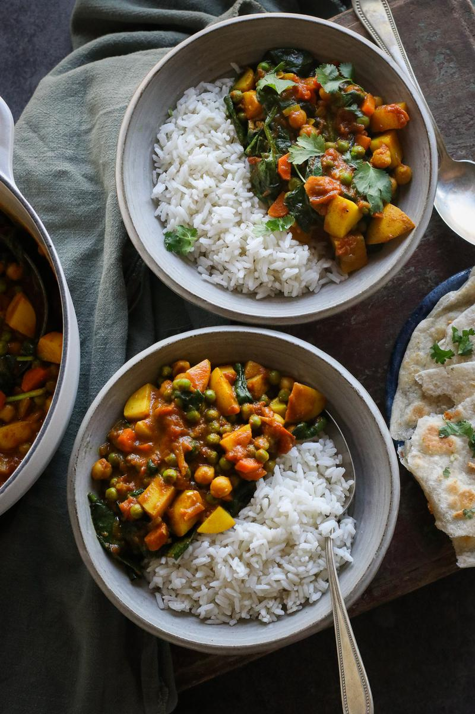
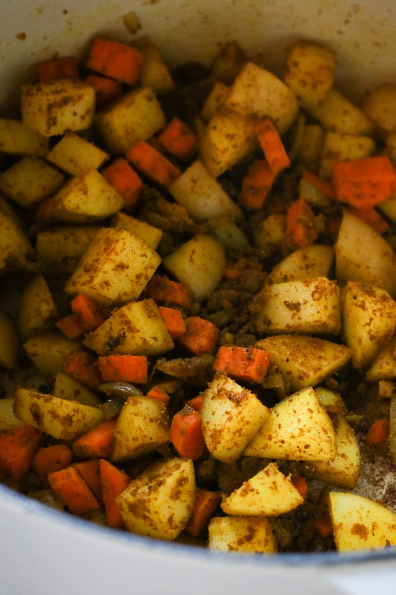
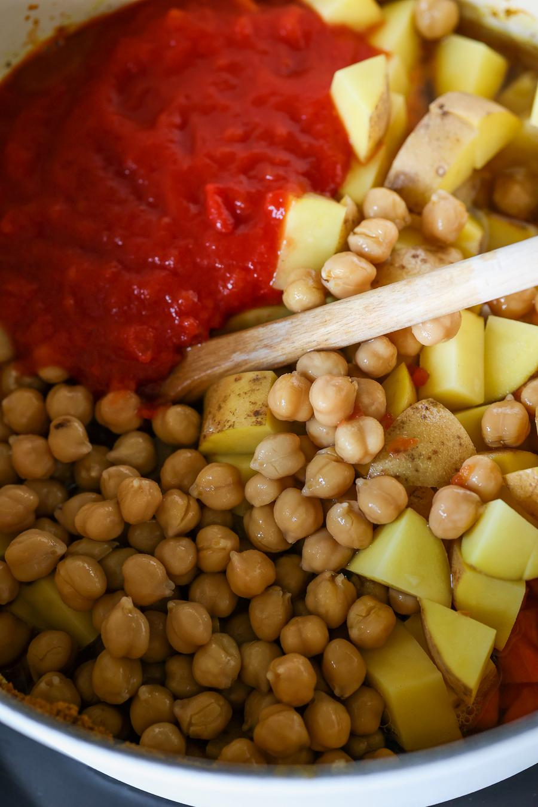
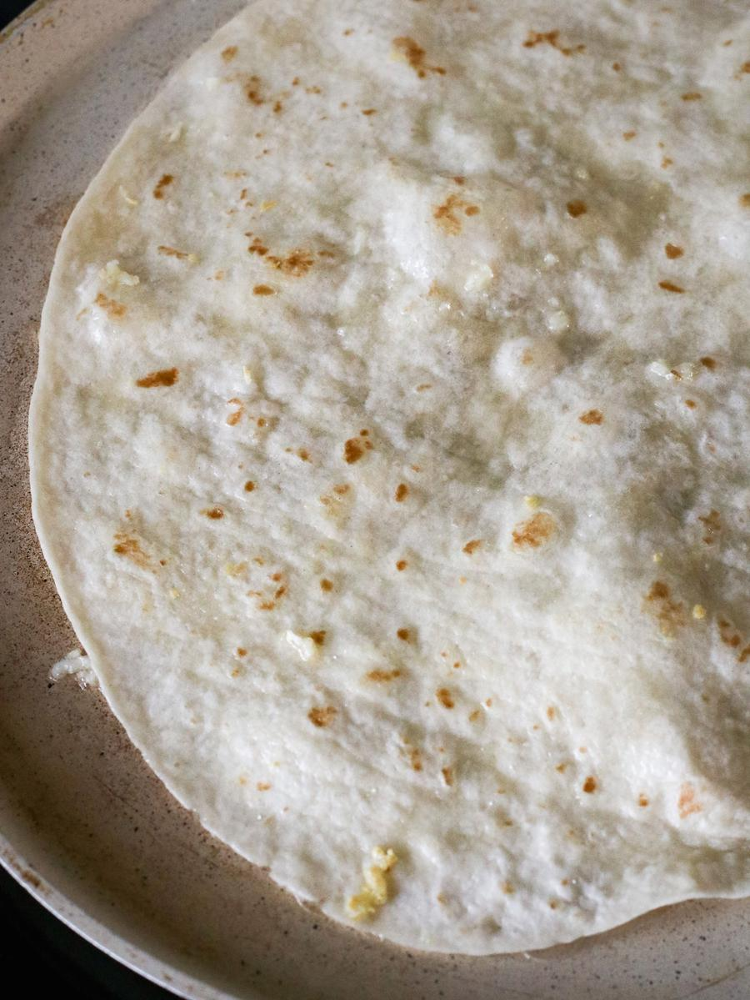
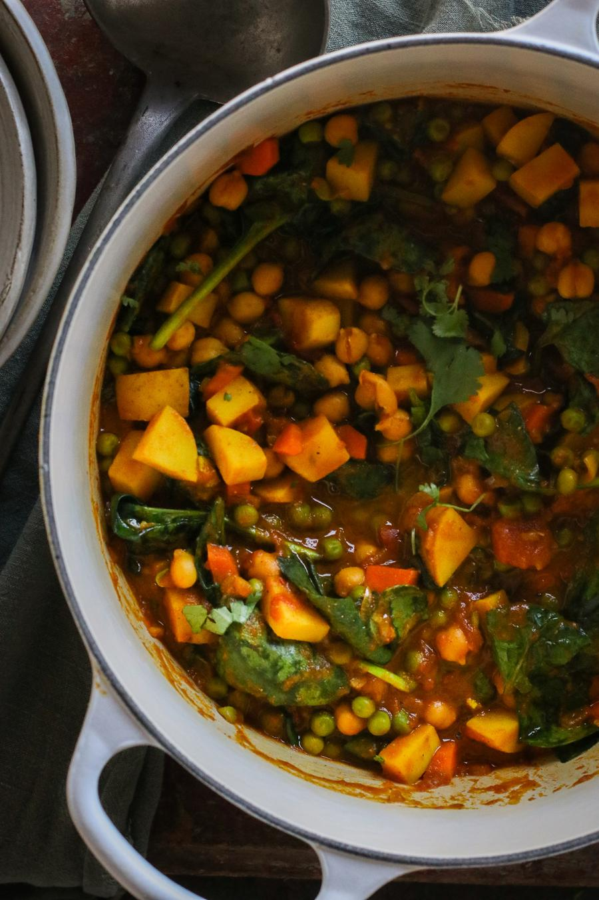
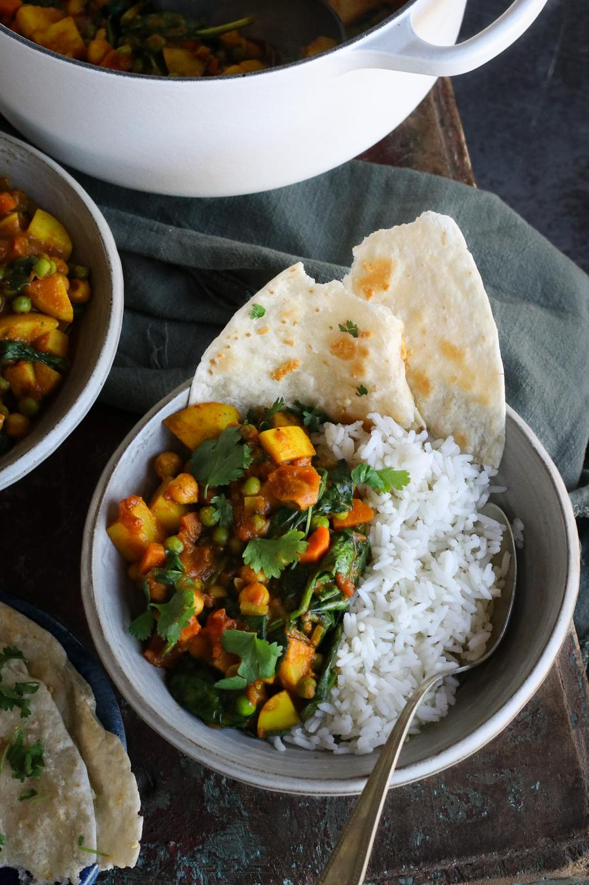

Potato & Spinach Curry

- 🍽️Servings: 4
- 🍝Total time: 35 min
- ⏱️Prep time: 10 min
- 🧑🏼🍳Cook time: 25 min
Ingredients
- 1 Tbsp (15 mL) vegetable oil
- 1 medium onion, chopped
- 2 cloves garlic, minced
- 1½ vegetable bouillon cubes, crushed
- 3 Tbsp (19 g) roti masala seasoning†
- 3 medium potatoes, cut into 1 cm cubes
- 1 medium carrot, diced
- 1 cup (164 g) cooked chickpeas
- 1 cup (240 mL) canned crushed tomatoes
- 1 cup (240 mL) water
- 1 cup (240 mL) canned full-fat coconut milk (optional)
- 2 cups (60 g) fresh spinach
- 1 cup (134 g) frozen green peas
Garlic tortilla
- 2 tsp (10 mL) vegetable oil
- 2 cloves garlic, crushed
- 2 large (25 cm) soft tortillas
Serves well with
- cooked rice
- fresh cilantro
Directions
- To a large pot over high heat, add the oil and onions and cook for 3 - 4 minutes. Then add the garlic and cook for another minute.
- Then add the crushed bouillon cube and masala seasoning. Cook and stir continuously for 30 - 60 seconds to allow the spices to lightly toast.

- Add the potatoes, carrots, chickpeas, tomatoes, and water. Bring to a boil.

- Reduce the heat to a simmer, cover, and cook for 20 - 25 minutes, or until the potatoes are fully cooked through. Stir periodically.
- To make the garlic tortilla, mix the oil and garlic in a small bowl. Brush the garlic oil on each side of the tortilla and toast in a large pan on medium-high heat for 1 - 2 minutes on each side, or until golden.

- When the potatoes are cooked, add the coconut milk, spinach, and peas. Cook until heated through.

- Serve the curry with the toasted garlic tortillas 'naans', or some rice if desired. Enjoy!

Notes
- † Our store-bought roti masala seasoning consists of ground coriander, turmeric, cumin, mustard, nigella, fenugreek, and pepper. If you don't have access to a similar spice blend, simply substitute out for an equal amount of curry powder.
Storage
- The curry can be kept in an airtight container in the fridge for up to 3 days, or in the freezer for up to 1 month.
- The garlic tortilla is best when enjoyed immediately.